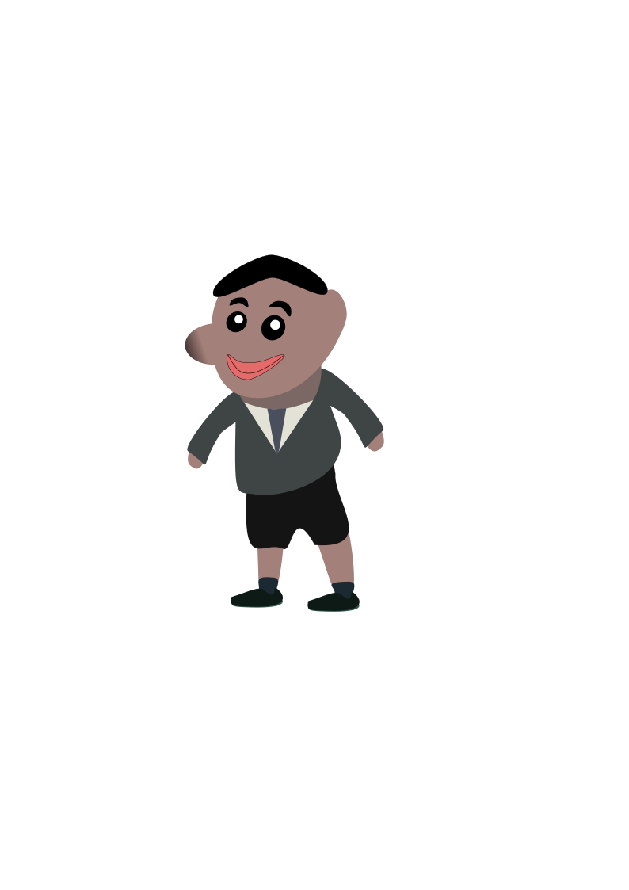

Image Creation

This is my green screen adventure in 10DGT.

This is a snowflake that I made for vector graphics in 10DGT.

This is my character creation (based off of my friend)
Evaluation
I found Image Creation to be really fun and enjoyable. My evaluation of Image Creation is that: We used InkScape and Gimp. I re-learnt a lot of skills from 9DGT and I think I prepared myself for a good year in Digital Technologies in Year 10.
I think that I will end up using these Image Creation skills for the Term 4 project by doing things such as creating sprites, making characters and decorations, etc.